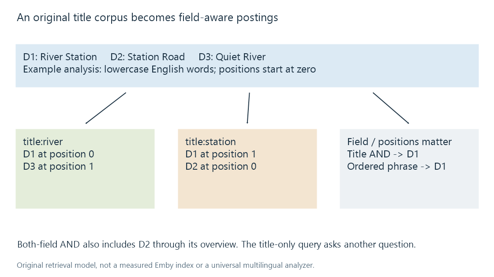
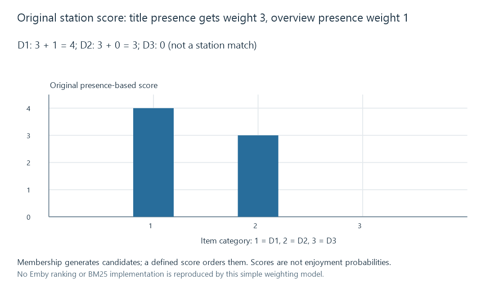

Search indexing for media metadata
A search index derives lookup structures from selected metadata fields, with analysis, field scope, positions and ranking determining which items a query returns.
A reader searching for River Station can mean the title, while another search can mean any item mentioning a river or station. A useful search route needs a defined relationship between that query and the metadata fields it examines.
An index prepares derived structures for that work. It is a representation of selected metadata, not another catalogue identity.
An original corpus makes the lookup visible
Consider these fictional records:
| Item | Title | Overview |
|---|---|---|
| D1 | River Station | night train at station |
| D2 | Station Road | river journeys |
| D3 | Quiet River | river river night |
For this example only, the analyzer lowercases the English text and splits its words. That deliberately simple rule is not a universal multilingual tokenizer.
A field-aware inverted index can retain entries such as:
| Field and term | Item/position relationships |
|---|---|
| title:river | D1 at 0; D3 at 1 |
| title:station | D1 at 1; D2 at 0 |
| overview:river | D2 at 0; D3 at 0 and 1 |
| overview:station | D1 at 3 |

Instead of rereading every title for each term, the query can consult the relevant posting lists. The index's layout/compression and query engine determine its actual cost.
Field scope changes the answer
Across both fields, river occurs in all three items and station in D1/D2. An AND query returns D1 and D2.
Restricted to title, river has D1/D3 and station has D1/D2. Their intersection returns D1 only.
Those results answer different questions correctly under the declared rules. D2's overview mentions river, so it belongs to the wider search even though its title is Station Road.
A filename, person name or tag can form another field. Deciding which fields participate is part of the query contract, not merely a cosmetic label around one universal string.
Phrase matching needs positions
Both title words occur in D1 with river immediately before station. That supports the phrase River Station. The reversed phrase Station River is not present.
Keeping only membership sets loses this order information. It can support AND queries but cannot distinguish that phrase by itself.
Stop-word processing adds another choice. If an analyzer removes by from River by Station, retaining original position gaps lets the engine distinguish that wording from an adjacent River Station phrase. Renumbering every surviving token as adjacent can erase the distinction.
The field boundary matters too: the last word of a title and first word of an overview should not accidentally become one phrase merely because an index concatenated fields.
Ranking is separate from membership
A query can first produce matching candidates, then order them. In an original presence-based score model for station:
score = 3 if present in title + 1 if present in overview.
D1 scores 4, D2 3, and D3 0. The weights express this example's title preference; they are not an Emby score.

More elaborate methods can account for term frequency, corpus frequency and document length. The linked BM25 reference documents one such similarity family. Repetition should not automatically be treated as independent evidence of relevance without the method's stated policy.
A numerical score is not necessarily a probability that the viewer intended that work. Display ordering and an exact identifier lookup also serve different tasks.
Analysis needs a text policy
Unicode metadata explains canonical normalization and the value of preserving the display title while deriving a comparison key.
Case folding, punctuation treatment, stemming and transliteration can improve some searches while changing distinctions. English word splitting cannot simply be assumed suitable for every script or for opaque provider identifiers.
The query and indexed fields need compatible analysis. Lowercasing only the query while retaining case-sensitive postings can produce missed matches even when the title looks correct in the library.
Updates must reach the derived representation
If a title changes but its postings remain unchanged, the displayed item can be correct while searches still find its old wording. Replacing a resource at a path can likewise leave another version's derived technical fields.
A coherent update removes or replaces obsolete index entries and installs the new analyzed values. The source record and index need a usable version relationship; rebuilding the same old source data does not discover a missing correction.
In Emby, compare the imported field, selected search scope and actual returned items. The source/analysis/index/query boundaries identify what is being tested. This article does not infer that Emby's media search uses SQLite FTS5, Lucene or the illustrated weights.
The result pool has its own scope
Search can operate on a particular library, media type or eligible set. Ranking then orders that set rather than making every indexed item available to every viewer.
A count computed over all records can disagree with a scoped result count legitimately. Faceted browsing develops those filters and the importance of counting distinct items.
The complete observation is therefore the source data, field analysis, query semantics, eligible set and ranking. A visible title alone does not describe every one of those decisions.